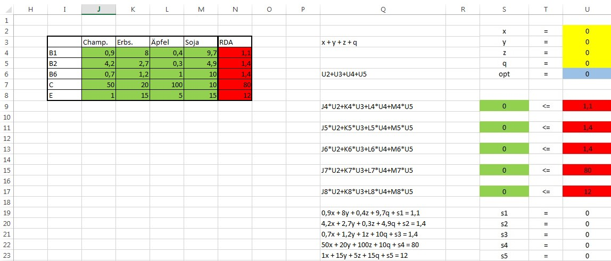
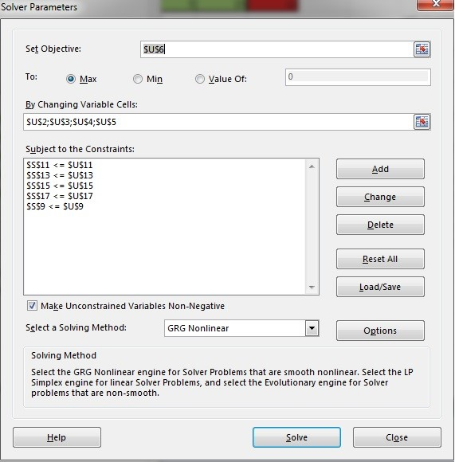
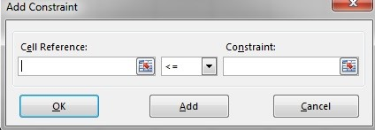
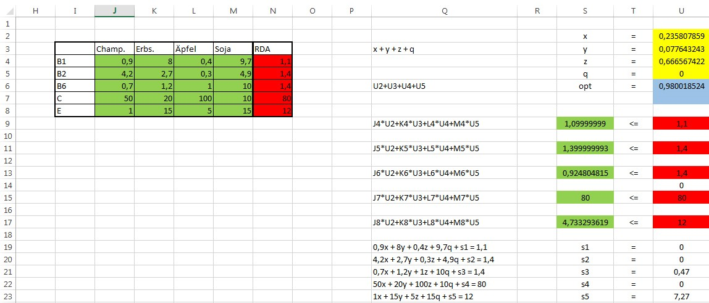

In der Tabelle sind mehrere Dinge zu sehen:
- Die RDA (Recommended Daily Allowance) der verschiedenen Vitamine
- stellen die empfohlene Tagesdosis für gesunde Menschen dar
- Die verschiedenen Typen von Vitaminen welche dieses Beispiel beinhaltet
- Die Menge von Vitaminen (in mg/kg) in 4 verschiedenen Lebensmitteln
Die Frage die sich stellt ist: “Wenn wir unseren Vitaminbedarf nur mit Hilfe dieser Lebensmittel decken wollten, was wäre der optimale Weg dafür?”
Nun, wie gehen wir die Sache an? Wir könnten zum Beispiel sagen, dass man das Problem vereinfacht als "Wieviel von was müssen wir essen?" darstellen können, und damit die folgende Formel ableiten:
Dabei repräsentieren “x, y, z, q” die Menge an Kilogramm jedes Lebensmittels welches wir konsumieren (Multiplikator ist 1, weil mg/1kg). Aber diese Formel gehört natürlich in eine Lineare Gleichung umgewandelt (t ist die totale Menge an konsumierten Lebensmitteln):
Der nächste Schritt ist es die Bedingungen zu definieren, die durch die Tabellenzeilen selbst dargestellt werden. Wenn man die Menge an Vitaminen in jedem Lebensmittel und die RDA-Limitierungen in Betracht zieht, ergeben sich folgende Bedingungen:
Mit diesen und der Zielfunktion, konstruieren wir uns die Standardform, von welcher wir im nächsten Schritt die Erweiterte Standardform durch Einführung der Schlupfvariablenblen und der Erfüllung der Regeln die vorher erwähnt wurden, ableiten:
Dieses Beispiel wird im weiteren Verlauf mittels des Excel Solver gelöst, welcher ein schnelles und einfaches Werkzeug ist um derartige lineare Probleme zu lösen. Im Bild darunter wird die Vorgangsweise beschrieben (die Q Spalte dient als Erklärung für die Felder rechts -> opt und die Grünen; x,y,z,q sind auf 0 gesetzt).

Mit diesem Setup fahren wir fort und benutzen das Solver add-in (Zuerst überprüfen ob wir es installiert haben; MS Excel: Datei -> Optionen -> Add-ins -> Solver Add-in -> Gehe Zu -> Solver Add-in Box ankreuzen und mit OK bestätigen), welches wir im Reiter Daten -> Solver aufrufen.
Danach fügen wir unser Ziel (in unserem Fall in der opt Zelle), die Variablen Zellen (x,y,z,q Zellen) und die Bedingungen (mehr grüne als rote Zellen) hinzu.

Hinzufügen der Bedingungen:

Nachdem alles fertig eingestellt ist auf "Solve" drücken und mit OK im nächsten Fenster bestätigen. Das präsentiert uns dann die Solver Lösung des Problems:

(Alle Werte sind auf 2 Dezimalstellen gerundet) Diese Werte bringen uns zum Schluss, dass das Optimum des Lebensmittelkonsums sein sollte: 0,24kg des Lebensmittels x (Champignons), 0,08kg des Lebensmittels y (Erbsen), 0,67kg des Lebensmittels z (Äpfel) und 0kg des Lebensmittels q (Soja), summiert auf das Gewicht der Lebensmittel -> 0,99kg.
Die Schlupfvariablen repräsentieren den Unterschied zwischen dem Ergebnis-Vitamin-Wert (grün) und der RDA (rot), diese sind s1=0, s2=0, s3=0,47, s4=0 und s5=7,27.